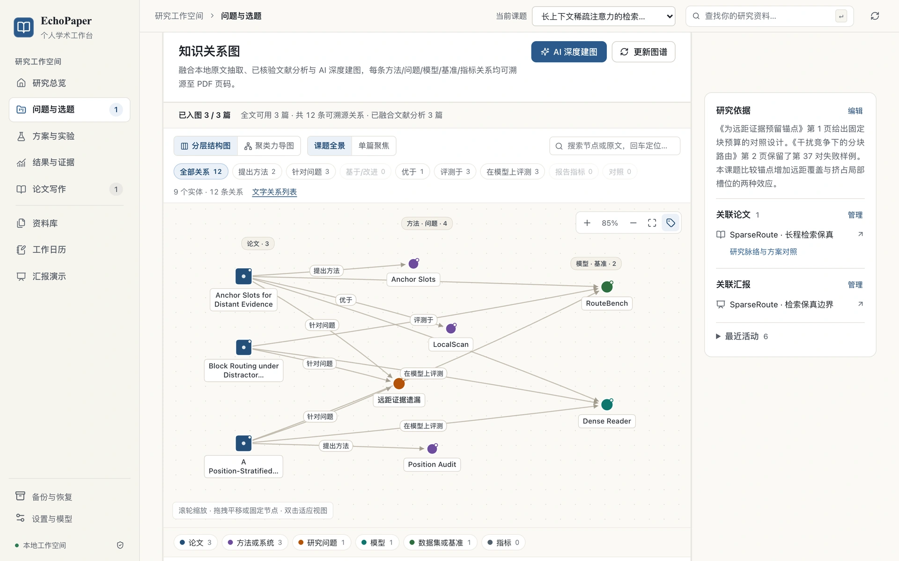
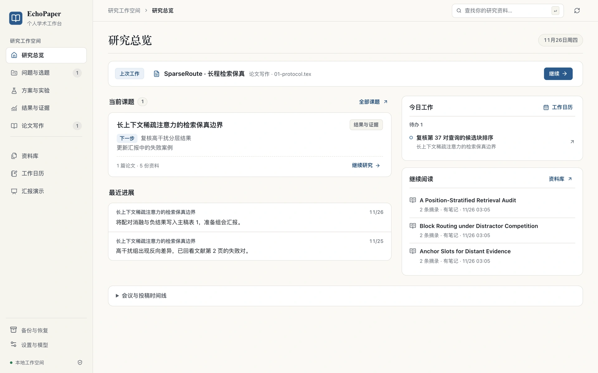
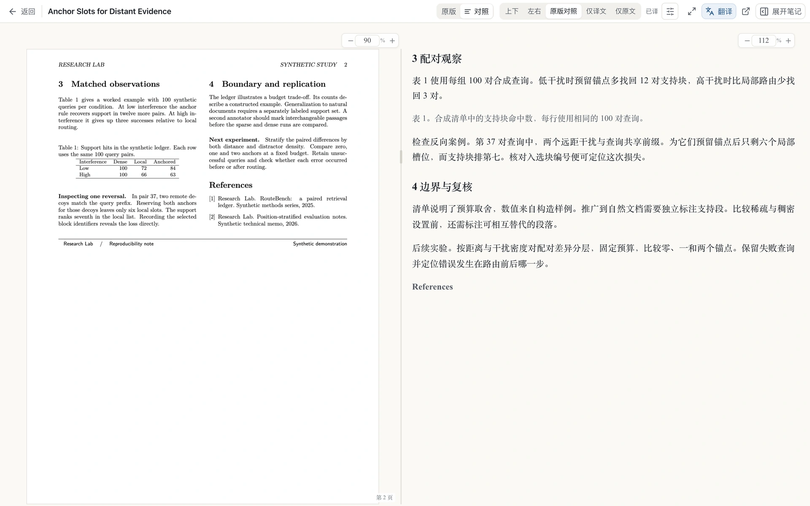
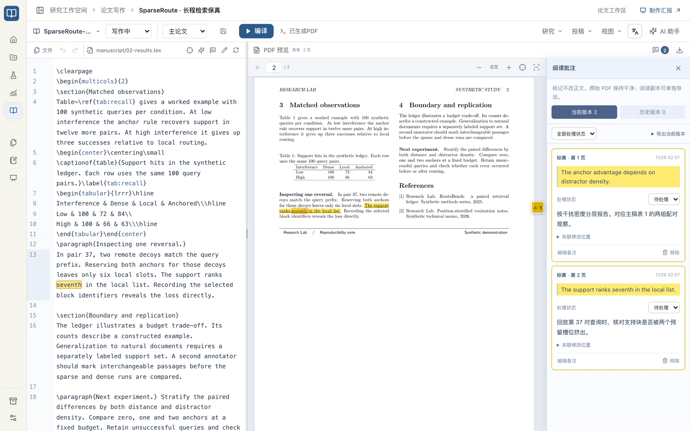
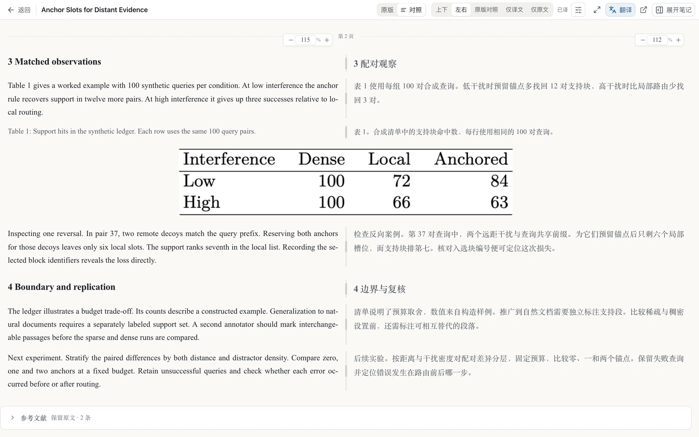
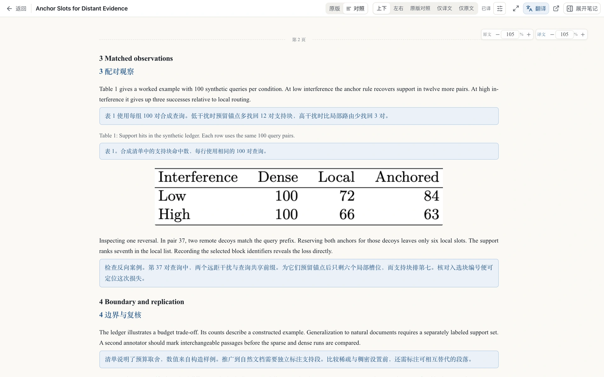
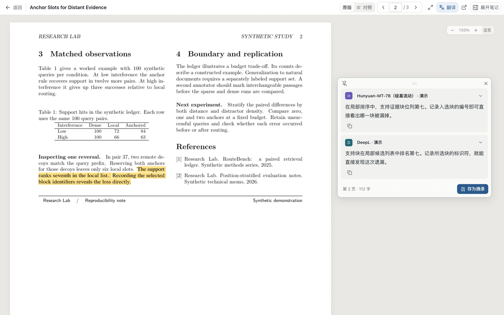
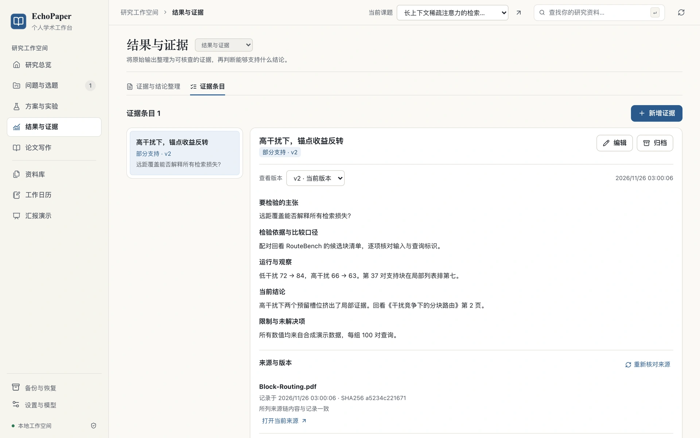

把方法和评测关系追到原句
把课题下多篇文献的问题、方法与评测连成可检索的图谱。点开节点或对比结论，找到原句及 PDF 页码。

截图暂不可用
截图暂不可用
截图暂不可用
截图暂不可用核对公式图表看原版对照，逐句对齐术语切左右，顺着论证通读切上下。遇到长难句，划词对比多个翻译来源，顺手存下带页码的摘录。
The support ranks seventh in the local list.支持块在局部列表中排第七。左栏保留原始 PDF 的双栏排版、公式与图表，右栏展示同页重排译文。两栏按页同步滚动，可分别缩放（50%–300%）。

截图暂不可用The support ranks seventh in the local list.支持块在局部列表中排第七。| 干扰 | 局部路由 → 预留锚点 |
|---|---|
| 低 | 72 → 84 |
| 高 | 66 → 63 |
原文和译文按段同排。拖动分隔线调整原文占比，方便逐项核对术语、限定条件和表格数字。

截图暂不可用The support ranks seventh in the local list.支持块在局部列表中排第七。每段译文紧接对应原文，顺着方法推导连续往下读，英文表述仍在手边。

截图暂不可用The support ranks seventh in the local list.阅读或写稿时划选句子，对照多个翻译来源。可纵排或并排显示、反向翻译、图钉固定，也能保存为带页码的阅读摘录。可自配硅基流动 Hunyuan-MT-7B、智谱 GLM、Qwen-MT、DeepL、小牛、百度、Microsoft 和 MiniMax 等来源。
同时提供原版 PDF、仅译文和仅原文视图，以及本地中英文联合检索。本地阅读与笔记无需 API 密钥。
EchoPaper 以研究课题串联文献、实验记录与论文主稿。用演示课题中的“第 37 对高干扰样本反转”走一遍，看看证据在各工作区如何接续。
Block-Routing.pdf p.2
来源指纹 SHA-256 前 8 位a5234c22
把课题下多篇文献的问题、方法与评测连成可检索的图谱。点开节点或对比结论，找到原句及 PDF 页码。

截图暂不可用局部路由 → 预留锚点 · 每组 100 对合成查询
记录高干扰条件下的负结果，保留 v2 版本和原文件的 SHA-256。示例中的命中数来自合成数据。

截图暂不可用在 01-protocol.tex 更新实验口径，在图示的 02-results.tex 记下反转。主动保存编译目标或点击编译，右侧就能预览 Tectonic PDF。用 SyncTeX 双击双向定位，在 PDF 上高亮标注未解析引用 ??，逐条整理审稿回复生成 responses.tex。导出投稿 ZIP 后可解压独立编译校验。
按天记录课题进展与待办。通过 CCFDDL 查看学术会议截稿倒计时。
按轮次管理意见并生成回复。投稿 ZIP 导出后可在独立目录重新编译校验。
在汇报工作区选取论文和笔记，编排大纲、图表与讲稿备注，导出可继续编辑的 .pptx。
工作区包含 papers、materials 和 workspace 目录。项目下的 notes 保存笔记，reviews 保存审稿记录，submissions 保存投稿包。
manuscript/main.tex 为示例路径。实际主稿入口由 project.json 中的 targets 指定。
浏览器工作台、桌面版与 VS Code / Codex 共用目录和 Git 历史。在 EchoPaper 保存时核对内容哈希冲突。
内置 Node.js、Python、Git、 Tectonic 与 SQLite。
下载 Windows 安装包先核对 SHA-256。确认来源后，如遇 SmartScreen 提示，点「更多信息」，再选「仍要运行」。首次启动时可选择本地数据目录。
git clone https://github.com/Blueeeecho/EchoPaper.git
cd EchoPaper先在终端执行上面的克隆命令，再到 EchoPaper 文件夹双击对应平台的启动脚本。
启动工作台.command启动工作台.batgit clone https://github.com/Blueeeecho/EchoPaper.git
cd EchoPaper
npm --prefix _system ci --no-audit --no-fund
npm --prefix _system run build
node _system/scripts/control.mjs start首次启动需要联网安装依赖。默认地址 http://127.0.0.1:4173
编译 LaTeX 另需 Tectonic。
HZAU 汇报字体包括 Times New Roman 及隶书。
本地阅读、笔记、检索与 LaTeX 编辑均无需密钥。安装好编译所需环境和模板资源后，也可在本机编译。AI、外部翻译和 OCR 服务按配置联网。
v1.0.0 是未签名的 Windows 预览包。先与发布页的 SHA-256 对照，确认来源后再按安装区的 SmartScreen 步骤操作。
按源码面板准备依赖，保留整个仓库目录。双击启动工作台.command，或执行终端构建启动命令。
可以。浏览器工作台、桌面版和 VS Code / Codex 可打开同一目录。在 EchoPaper 保存时核对内容哈希冲突。
截图取自 EchoPaper 工作台。课题、论文、实验数值和划词对比中的示例译文均为本页使用的合成演示材料。